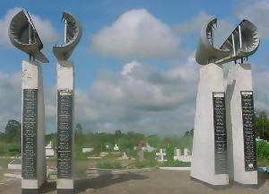
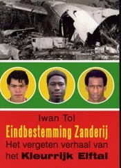

Ter herdenking aan
Andro Knel
Over Andro Knel
Andro Knel werd op 8 oktober 1967 in Rotterdam geboren. Andro was een vrolijke jongen en een goed voetballer. Op school blonk hij uit in allerlei sporten. Vooral (ijs)hockey, turnen en voetbal vond hij leuk. Na de HAVO kwam Andro uiteindelijk terecht
in de ere-divisie als linksback en middenvelder. Eerst bij Sparta en toen bij NAC. Op 6 juni vertrok Andro samen met het kleurrijk elftal per vliegtuig naar Suriname om aldaar een vriendschappelijk tournooi te spelen. Op 7
juni 1989 vroeg in de ochtend verongelukte het vliegtuig van de SLM vlakbij het vliegveld Zanderij in Suriname. Andro kwam om. Zo ook de meeste andere spelers van het kleurrijk elftal. Slechts 3 spelers overleefden de ramp.
Deze site heeft als doel om Andro te eren en te herinneren en de wereld te vertellen wie Andro was.
Biografie
In de tweede klas van de HAVO heeft Andro een collage moeten maken over zichzelf. Die collage blijkt een prachtige autobiografie te zijn. Waarschijnlijk heeft hij deze collage gemaakt op zijn verjaardag, want op een van de bladen staat de inleverdatum
vermeld: 9 oktober.


Herinneringen
Herinneringen aan Andro staan ook in het gastenboek. Op deze pagina echter probeer ik (de webmaster) mijn eigen herinneringen te verwoorden en ik wil graag in de toekomst ook van anderen die dicht(er)bij hem stonden de herinneringen noteren.
Deze lijst bevat korte, krachtige verhalen over Andro. In hooguit 10 zinnen vertellen vrienden, kennissen, klasgenoten, familieleden etc. iets leuks over wat ze met Andro hebben meegemaakt. Zo krijg je dmv korte stukjes een beeld van Andro.
- Lody R.
- Patrick van F.
- Ferry D.
- De webmaster
- Extra
Ik heb met Andro in de landelijke jeugd van Den Haag gespeeld. Andro bleef op vrijdag bij mij slapen omdat hij in Rotterdam woonde. Toen wij een keer op vrijdag stiekum in Delft op stap gingen hadden we de laatste trein en bus gemist en we moesten toen
van Delft naar Den Haag teruglopen. Tijdens de wandeling kwam er plotseling toch nog een bus buiten dienst langs en Andro ging midden op de weg staan en hield hem aan. De bus stopte en Andro smeekte hem om ons mee te nemen.
Hij beloofde de chauffeur dat hij de eerste de beste thuiswedstrijd van FC DEN HAAG gratis mocht kijken. Gelukkig was het een Den Haag supporter en hij heeft ons helemaal voor de voor deur midden in de nacht afgezet. Een
paar jaar later heeft Andro, nadat hij nooit in het eerste van Den Haag had gespeeld, zijn carriere bij Sparta voortgezet.
Wij hadden en hebben nog steeds een vriendengroep waar Andro een deel van uitmaakte. Die groep bestond al toen ik erbij kwam en naast Andro was er Dennis K., Aldo S., Harm de J, Jeroen van der W., Peter N, Ferry D. en ondergetekende. Behalve dat de meeste
in het zelfde voetbalelftal speelden en bij elkaar op school zaten, gingen we met z'n allen ook steevast elke week naar de Boerderij of Locomotion. Van te voren spraken we meestal bij ��n van ons thuis af om 'in te drinken,
muziek te luisteren en te kaarten'. Daarnaast gingen we met de groep op vakantie naar Lloret de Mar of Fuengirola in Spanje. Andro zorgde er dan wel voor dat er niet alleen maar gezopen werd, maar dat er ook nog iets aan
sport gedaan werd. Mijn herinneringen gingen vooral over de liefde voor muziek die we deelden, discussies over de betekenissen van de U2 teksten, zijn liefde voor Japan en David Sylvian. Ik zong toen zelf in een band en
we hadden mooie gesprekken over muziek en de waarde ervan. Met mijn band waren we onze 1e single aan het opnemen toen het ongeluk gebeurde. Ik had de hele dag in een studio gezeten en toen ik thuiskwam had Dennis een brief
bij mij in de bus gedaan met de mededeling dat Andro aan boord van het vliegtuig had gezeten... Die allereerste single hebben we toen ook aan Andro opgedragen, zie onder. Diezelfde avond schreef ik een tekst waar we later
een nummer van hebben geschreven. Ik weet nog dat ik bij onze optredens zijn vader ben tegengekomen die het zo mooi vond dat we dit hadden gedaan. Ik heb net even in een schoenendoos gespit en ben de tekst van het lied
tegengekomen. We hebben het nummer wel een paar keer live gespeeld, maar hebben het helaas nooit echt opgenomen...
Ik ben een vriend van Andro uit zijn "Zoetermeer"-tijd. Ook toen hij bij Sparta voetbalde nam hij nog weleens contact met mij op. Hij is, volgens mij niet lang voor het ongeluk in Suriname, bij mij langsgeweest. Hij mocht mijn skates hebben en kwam die
toen ophalen. In Zoetermeer waren wij meestal met z'n achten (Andro, Jeroen, Aldo, Dennis, Patrick, Harm, Peter en ik). We gingen met z'n achten naar de disco, op vakantie, vierden verjaardagen bij elkaar etc. Ik heb volgens
mij nog behoorlijk wat vakantiefoto's waar Andro op staat. Misschien aardig te vermelden dat wij nog altijd om de paar maanden met elkaar afspreken om wat te gaan drinken en eten. Er wordt dan nog weleens getoast op de
grote afwezige, Andro.
1. Tijdens de engelse les van Dhr. de Kleine in klas-1E van de HAVO was Andro niet echt met de les bezig. Hij werd afgeleid door Daphne V. die volgens mij achter hem zat. Toen Dhr. de Kleine Andro vermanend toesprak zei Andro: "Maar Daphne zei dat ik
............. moest doen!" Dhr. de Kleine: "Als Daphne zegt dat je in de sloot moet springen, doe je dat dan ook? Andro gevat: "Nou, als het lekker weer is!"
2. Op een dag bij een vriendje thuis stond een kan met 1,5 liter siroop op tafel (we kwamen net dorstig binnen van een potje voetbal). Andro wedde dat hij die siroop in zijn eentje op kon drinken binnen tien minuten. Met nog 1 minuut te gaan en nog 1 volle beker voor zijn neus betrok zijn gezicht en werd het stil aan tafel. Verwachtingsvol keken we hem aan en hij keek met een bleke doch nog steeds guitige kop terug. Vervolgens staarde hij even naar het niets en zei: �k moet kakken�. En weg was ie naar het toilet. Dat was lachen natuurlijk. Temeer daar we, verzameld rond de wc-deur, de meest ranzige geluiden hoorden terwijl hij uiteindelijk niet over zijn nek is gegaan. Onze opmerkingen voor de wc-deur en zijn "kap nah jongens" (een stopzinnetje van hem) vanachter de deur was geweldig. Slappe lach natuurlijk.
2. Op een dag bij een vriendje thuis stond een kan met 1,5 liter siroop op tafel (we kwamen net dorstig binnen van een potje voetbal). Andro wedde dat hij die siroop in zijn eentje op kon drinken binnen tien minuten. Met nog 1 minuut te gaan en nog 1 volle beker voor zijn neus betrok zijn gezicht en werd het stil aan tafel. Verwachtingsvol keken we hem aan en hij keek met een bleke doch nog steeds guitige kop terug. Vervolgens staarde hij even naar het niets en zei: �k moet kakken�. En weg was ie naar het toilet. Dat was lachen natuurlijk. Temeer daar we, verzameld rond de wc-deur, de meest ranzige geluiden hoorden terwijl hij uiteindelijk niet over zijn nek is gegaan. Onze opmerkingen voor de wc-deur en zijn "kap nah jongens" (een stopzinnetje van hem) vanachter de deur was geweldig. Slappe lach natuurlijk.
Als je meer wilt lezen over Andro, de andere voetballers van het kleurrijk elftal en de vreselijke ramp van 7 juni 1989 dan raad ik je het boek van Iwan Tol aan genaamd: 'eindbestemming Zanderij'. Klik HIER om dat boek te bestellen.


Hierboven zie je links het monument dat is gebouwd ter herinnering aan het ongeluk van 7 juni 1989. Rechts de voorkant van het boek van Iwan Toll
Andro Knol Web
De bokaal
Ter ere van Andro wordt er zo nu en dan om de Andro Knel bokaal gespeeld. Voor aanvang van een wedstrijd tussen Sparta en NAC spelen de supporters van die clubs een vriendschappelijke wedstrijd tegen elkaar om de Andro Knel bokaal. Dit komt omdat Andro
destijds bij zowel Sparta als (later) NAC speelde. Bij beide clubs was hij geliefd vanwege zijn goede voetbal, zijn charisma en zijn humoristische uitlatingen in en buiten het veld. Hiernaast zie je wat foto's van de laatste
ontmoeting om de Andro Knel bokaal in 2005. Lees HIER het verslag van deze wedstrijd. Of klik hier voor info op een site over sparta. Hieronder staat een verhaal uit 1999 van Paul Lasse en Richard Sommen over de Andro Knel
bokaal. Deze tekst is gekopieerd van http://www.bsiderats.nl/nieuws/nieuwsitem.php?nieuwsid=6142
Het hoe en waarom van de Andro Knel bokaal
Supporters van NAC en Sparta maken op sportief gebied een -zogezegd- rampseizoen door. Tevens is het bijna tien jaar geleden dat de werkelijk ramp met het SLM vliegtuig zich voltrok. Sparta Fanzine In The Winning Mood en NAC Fanzine De Rat brengen gezamenlijk
een uniek fanzine uit. Met de strijd om de Andro Knel bokaal droegen supporters van NAC en Sparta hun steentje bij aan het niet vergeten van deze trieste gebeurtenis. Tegelijkertijd moesten Sparta en NAC elkaar in de Eredivisie
proberen af te slachten. Lijfsbehoud stond op het spel. Juist op dat moment maakten de twee oudste fanzines van Nederland een 'splitfanzine'. E�n kant van het fanzine begon met Sparta. Draaide je het fanzine om, keerde je het
ondersteboven et voil�, het NAC gedeelte begon. Een deel van het fanzine was gezamenlijk geschreven. In vooruitblik op de Andro Knel bokaal van aanstaande zaterdag hier artikelen -uiteraard over Andro Knel- uit deze unieke
editie in de Nederlandse fanzine geschiedenis. De voetballer en mens Andro Knel Knel brak bij Sparta op 19 jarige leeftijd door in het eerste van Sparta. Met zijn dreadloks had hij best iets weg van Ruud Gullit. Andro kon goed
voetballen, echter niet zo goed als Gullit natuurlijk. Toch was Andro heel erg geliefd op Het Kasteel. Er hingen spandoeken met rasta kleuren, teksten en tekens verwijzend naar Andro, liefhebber van de uit Jamaica afkomstige
rasta muziek van o.a. Bob Marley en Peter Tosh. De aanvallende middenvelder scoorde 1 doelpunt in 44 competitiewedstrijden. De wedstrijden van Sparta 2 meegerekend speelde Andro 3 KNVB Beker wedstrijden. Daarin kwam hij niet
tot scoren. Andro had in die tijd nog geen rijbewijs en kwam met de tram naar de trainingen. Als het mooi weer (bij Andro niet regenen) was dan kwam hij op zijn roller-skates. Moest je de trainer, toen Rob Baan, zien kijken.
Die begreep daar helemaal niets van, maar liet het wijselijk gaan. Als je met Andro sprak dan sprak je met een enorm vriendelijke en ge�nteresseerde persoonlijkheid die toevallig ook nog eens aardig tegen een balletje kon trappen.
Hij was oprecht en eerlijk. Onder de vrouwen was hij ook graag gezien. Achteraf heeft Andro de pech gehad in een moeizaam draaiend Sparta te spelen. Als je zo jong bent en een elftal draait niet, is het soms verstandig om een
stapje terug te doen (Nac speelde op dat moment in de eerste divisie) om er later twee of drie vooruit te maken. Die stappen vooruit heeft Andro nooit meer mogen maken. Desalniettemin heeft Andro in die korte periode van zijn
leven een onvergetelijke indruk achter gelaten waar nu, 10 jaar later, nog steeds met opvallend veel sympathie over gesproken wordt. Paul Lasee, Artikel is uit mei 1999
In Memoriam: Andro Knel
Op 7 juni 1989 stortte een twintig jaar oude DC-8 van de Surinaamse luchtvaartmaatschappij SLM neer vlak voor de landing op vliegveld Zanderij, nabij Paramaribo. Onder de 183 inzittenden was het complete Surinaamse elftal met Nederlandse voetballers aan
boord. Slechts enkelen overleefden de ramp. Onder de omgekomenen was ook voetballer Andro Knel, op dat moment een half jaar daarvoor van Sparta naar NAC getransfereerd. De klap kwam keihard aan. Zelfs voetballer Ruud Gullit,
zojuist winnaar met AC Milan van de Europacup I verklaarde �het winnen van die beker is helemaal niets vergeleken met deze verschrikkelijke ramp�. Bij het toenmalige NAC stadion aan de Beatrixtraat werden door honderden fans
van NAC en Sparta bloemen, shawls en andere attributen neergelegd. Er ontstond een tijdelijk Knel Monument waar spontaan iedereen op af kwam. Eens te meer bleek hoeveel fans de sympathieke Andro Knel had. Bij Sparta waren dat
er al velen maar bij NAC had hij in nog geen half jaar tijd nagenoeg dezelfde populariteit opgebouwd. De moeder van Knel vertelde �diep onder de indruk te zijn van het eerbetoon in Breda�. Het condoleance-register werd door
vele honderden fans getekend. De vele bloemen, shawls en andere zaken ter nagedachtenis aan Andro werden pas na 4 dagen verplaatst van de hoofdingang naar het vak van de B-Side. Menig Sparta shawl heeft tot aan de overstap
naar het nieuwe stadion aan de dakrand van de B-Side gehangen, ter nagedachtenis aan Andro Knel. Vanuit de vele trieste momenten rondom de begrafenis van Andro is de speciale band tussen de NAC �en Sparta supporters ontstaan.
Na 10 jaar blijkt de wederzijdse sympathie er nog steeds te zijn waarbij de jaarlijkse wedstrijden tussen supporters zorgen voor de prettige kontakten onderling. Uit deze kontakten is het idee ontstaan om 10 jaar na (trieste)
dato gezamenlijk een fanzine te maken. De eerste 40 pagina�s vormen het �normale� fanzine (zowel in De Rat als In The Winning Mood) terwijl de laatste 8 zijn gereserveerd voor de gasten. Hierin wordt over de specifieke band
gesproken, oude verhalen en uiteraard over Andro zelf.
Andro Knel web